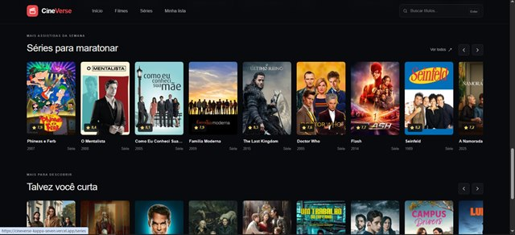

CineVerse
Plataforma responsiva para descobrir filmes e séries, com busca, catálogos, filtros e páginas de detalhes com elenco, notas, trailers e recomendações.
Desenvolvida com Next.js App Router, React, TypeScript, Tailwind CSS, TanStack Query, Zustand e Motion. Integra a API do TMDB por uma rota server-side, mantendo a chave protegida no servidor.